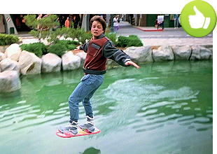
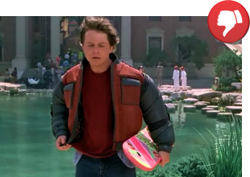
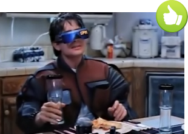
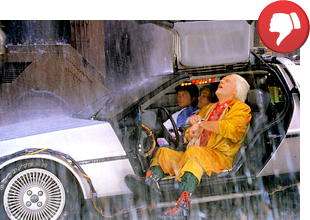
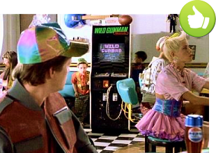
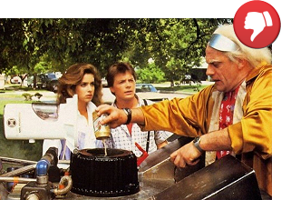
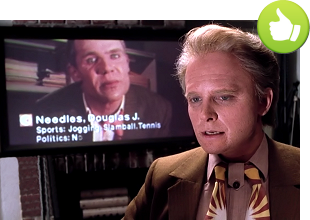
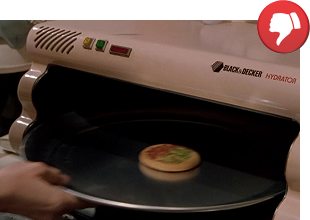

3 July 2015 marks the 30th anniversary of the 80s cult sci-fi comedy film Back to the Future. In the movie, Marty McFly (Michael J. Fox) and his loyal friend Dr. Emmett ‘Doc’ Brown (Christopher Lloyd) embark on various time-travel adventures.
In the 1989 sequel, Back to the Future Part II, Marty & Doc travel ‘back to the future’, i.e. to the year 2015, on a mission to try and prevent McFly’s future son from getting into trouble with the law and ending up in jail.
While in the year 2015, Marty & Doc encounter a plethora of gizmos and gadgets strange to them, but common to the future folks who use them in their everyday lives. Now, when we have finally made it to 2015 without a time machine, let see if any of the movie’s predictions have actually come true…
Flying car was without a doubt the best invention featured in ‘Back to the Future’, but more than 30 years later, we are nowhere closer to making this dream a reality. While there were some concept ‘flying cars’ before, like the Moller Skycar, so far all these were essentially small aircraft and none of them achieved free flight out of ground. The first fully functioning ‘flying car’ making use of existing infrastructure created for both cars and planes is probably Aeromobil, built by a team of enthusiasts from Bratislava, Slovakia, but even this is little more than a foldable, although roadworthy, aeroplane that still needs a runway for takeoff.
Although a fully-fledged hoverboard, as seen in Back to the Future Part II, has yet to materialise, a couple of recent inventions came pretty close. The first of these, Hendo, invented by Greg Henderson, uses four engines to carry up to 135 kilograms while hovering one inch above the ground, but requires a non-ferromagnetic metal surface to function, as it works on a magnetic levitation principle. The second, propeller-driven hoverboard created by Canadian inventor Catalin Alexandru Duru, can hover over any surface (even over water – eat your heart out Marty McFly) but has a limited range of about 300 metres.
While you won’t be able to buy a self-drying Superdry jacket in your local clothing store any time soon (if ever), 2015 could be the year when we finally see the self-lacing trainers. “Are we going to see power laces in 2015? To that, I say yes.” announced Tinker Hatfield, shoe designer at Nike, at a press conference last year. Meanwhile smart clothing slowly takes shape in the form of perhaps slightly less dramatic, but probably much more practical electronic textiles that monitor vital signs of the wearer, such as heart rate and body temperature, as well as smart clothes designed for training data acquisition in sport.
OK, Google Glass, smart glasses developed by Google, may have flopped amidst concerns regarding the intrusion of privacy, but optical head-mounted displays are here to stay, in one form or another. While Google Glass undergoes a radical redesign overseen by former Apple designer Tony Fadell, who was instrumental in bringing Apple’s iPod to market, other companies are coming with their own versions of smart glasses, such as Microsoft with their HoloLens augmented reality unit. Meantime, Oculus Rift, a virtual reality head-mounted display, is set to bring about a complete revolution in video gaming.
“First, you’ve gotta get out and change clothes.” says Doc Brown to Marty McFly just as their DeLorean touches down in the future. “Right now? It’s pouring rain.” objects Marty. “Wait five more seconds. Right on the tick. Amazing. Absolutely amazing. Too bad the post office isn’t as efficient as the weather service.” While weather modification will likely stay in the realm of science fiction, a short-range weather forecasts have become more accurate, thanks to supercomputers acquired by meteorological agencies, such as Met Office’s new £97 million computer, that, Met Office says, will deliver a “step change” in forecast accuracy.
“You mean you have to use your hands?” sneers a little boy after Marty shoots a perfect score with the electronic gun at the video game arcade in the future version of his home town in 2015. “That’s like a baby’s toy!” adds the second boy. The film correctly predicted a future where playing video games doesn’t require hands, as proven by Microsoft Kinect motion sensing game controller for Xbox One game console. Some companies, such as Emotiv Systems with their Emotiv EPOC neuroheadset, are even researching ways of utilising brain-computer interfaces to control video games by the power of thought alone.
The DeLorean time machine that featured in the Back to the Future trilogy is powered by a nuclear reactor using plutonium fuel to generate the 1.21 gigawatts of electricity required to activate the flux capacitor which is the core component of the time machine. Doc Brown later outfits his DeLorean sports car with Mr. Fusion Home Energy Reactor that turns assorted household waste to clean energy. Although cold fusion nuclear reactor will most likely remain a dream, the UK’s first 40-seat ‘Bio-Bus’, that runs on bio-methane gas generated from human faeces and food waste, has gone into service between Bristol and Bath.
One scene in the film depicts Marty having a video chat with his colleague D. J. Needles. While the two discuss a dodgy business deal, the large wall-mounted TV displays Needles’s basic personal information, including name, dietary habits, sport preferences and political affiliation. This is one prediction that came completely true. Nowadays, large-size flat-screen television sets have become all but the norm, video conferencing platforms such as Skype help us to connect with our family, friends and colleagues worldwide, while social media networks such as Facebook and Twitter are all-pervasive in all walks of life.
As the McFly family gathers around the dinner table, grandma Lorraine places a small, dehydrated Pizza Hut pizza at a metal plate, puts it into the Black & Decker hydrator and utters “Hydrate level 4, please!” into a small grille on the device. She waits a few seconds, opens the hydrator and voila – the pizza comes out normal size, piping hot and ready to eat. Unfortunately, at the moment, the only known way to rehydrate anything is to submerge it in boiling water. However, we can produce a variety of customised foodstuffs via the process of 3D Printing, including candy, chocolate, crackers, pasta, and – wait for it – pizza!